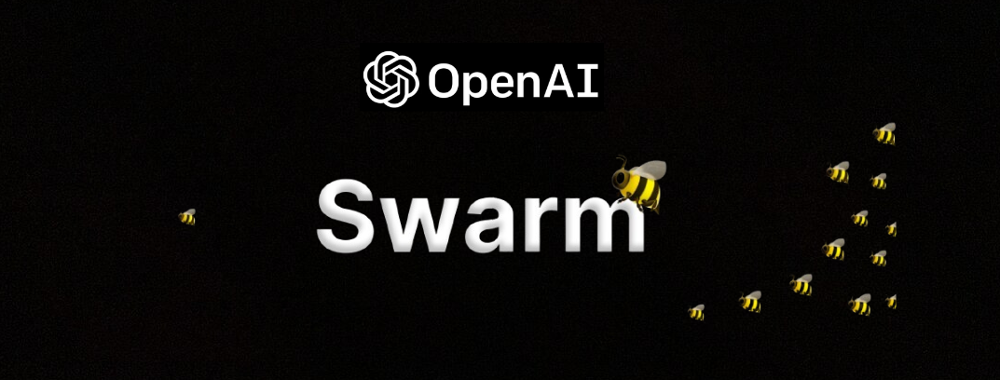

What Exactly is Swarm Intelligence ?

Have you ever watched a flock of birds flying together, changing direction in perfect harmony, or seen a group of ants working as a team to find food and bring it back to their nest? These are just a couple of examples of how groups in nature seem to act as one, even though each member is just following simple rules.
Swarm AI (or Swarm Intelligence) is a field of artificial intelligence that tries to understand and copy this kind of group behavior. The main idea is that a large number of simple individuals—like birds, ants, or even tiny robots—can work together to solve problems, even if each one isn’t very smart on its own. There’s no single leader telling everyone what to do. Instead, each member of the group makes decisions based on what’s happening around it, and the whole group ends up acting in a smart and organized way.
Researchers got interested in Swarm AI because they noticed that these natural groups can do things that are hard for even the most powerful computers. For example, ants can find the shortest path to food, or fish can move together to avoid predators, all without anyone being “in charge.” Scientists wanted to know how this works, and whether we could use the same ideas to solve problems in our own world.
Swarm AI is a bit like a team sport, where every player pays attention to what’s happening nearby and makes quick decisions, but there’s no coach on the field. When everyone follows a few simple rules, the team as a whole can do amazing things—sometimes better than a single expert could do alone.
People study Swarm AI not only to understand nature better, but also to find new ways to build computer programs, robots, and systems that can work together, adapt to changes, and solve tough problems. It’s a way of thinking that shows how simple parts, when put together, can create something much greater than the sum of their parts.
So, if you’re curious about how groups in nature seem so smart, and how we might use those secrets to make our technology better, Swarm AI is the field to explore. It’s all about teamwork, simple rules, and the surprising power of working together.
How is Swarm AI different from traditional AI ?
When most people think of artificial intelligence, they imagine powerful computers or robots making decisions based on huge amounts of data and complex programming. This is how traditional AI works: a single system or program tries to “think” and solve problems, often using a central brain or controller.
Swarm AI, however, takes a very different approach. Instead of relying on one super-smart machine, Swarm AI is all about teamwork. It uses many simple agents—like tiny robots, software programs, or even sensors—that each follow a few basic rules and interact with their nearby neighbors. There is no single leader or master plan. Instead, the group’s intelligence comes from the way all the agents work together.
This difference makes Swarm AI especially good at handling situations where things are always changing, or where it’s hard to predict what will happen next. If one agent fails or gets lost, the rest can keep going without any trouble. The system doesn’t break down just because one part isn’t working. In fact, sometimes the group can even adapt and find new solutions on the fly!
By focusing on collaboration and local decision-making, Swarm AI can solve problems that would be too complicated or unpredictable for traditional AI. It’s a bit like the difference between a single chess grandmaster and a whole team of people each making their own moves, but somehow still working together to win the game.
Swarm AI shows us that sometimes, the smartest solutions come not from one brilliant mind, but from the simple actions of many working together.